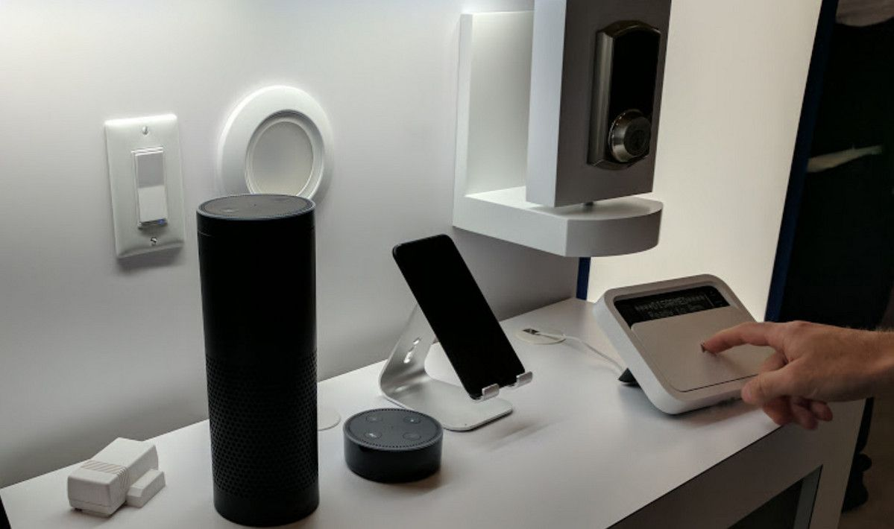

Крупнейшим разработчиком облачных технологий и электронных устройств является американская компания Amazon. Она была создана в 1994 г для интернет-торговли книгами. Экспертам понравились интеллектуальные колонки, которые могут успешно взаимодействовать с разработками других компаний. Для удобства пользования придуманы голосовые помощники. Благодаря жесткой конкуренции с Google производителю удается создавать новые инновационные продукты.
Amazon Alexa, или Alexa — виртуальный ассистент, разработанный компанией Amazon и впервые появившийся в умных колонках. Ассистент поддерживает голосовое общение, воспроизведение музыки, подкастов и аудиокниг, составление списков дел, настройку будильников, предоставление актуальной информации о погоде, трафике, спорте, новостях и т. п., управление устройствами в умном доме. Пользователи могут расширять возможности Alexa, устанавливая «навыки», разработанные сторонними поставщиками.
Российские пользователи успели познакомиться с американскими системами "Умный дом". Они отмечают удобство в применении и богатый выбор инновационных устройств. Из минусов отмечается отсутствие поддержки русского языка голосовыми помощниками.
Преимущества:
•
богатый ассортимент;
•
инновационные разработки;
•
совместимость с продуктами других компаний;
•
удобство в работе.
Недостатки:
•
голосовые помощники не говорят по-русски.

Платформы для реализации умного дома: ◊ Xiaomi ◊ Google ◊ Apple ◊ REDMOND ◊ Samsung ◊ Yandex ◊ Ростелеком ◊ Rubetek ⚙ На главную